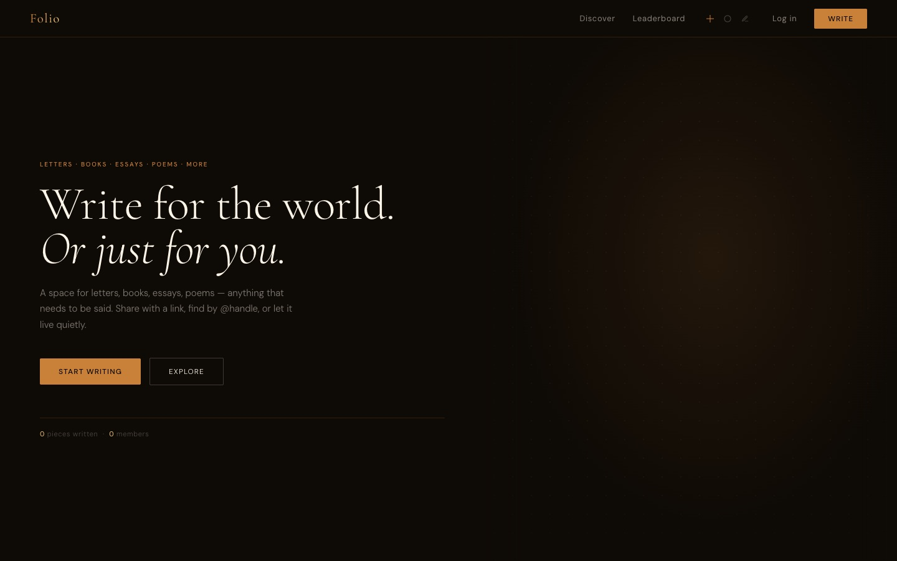
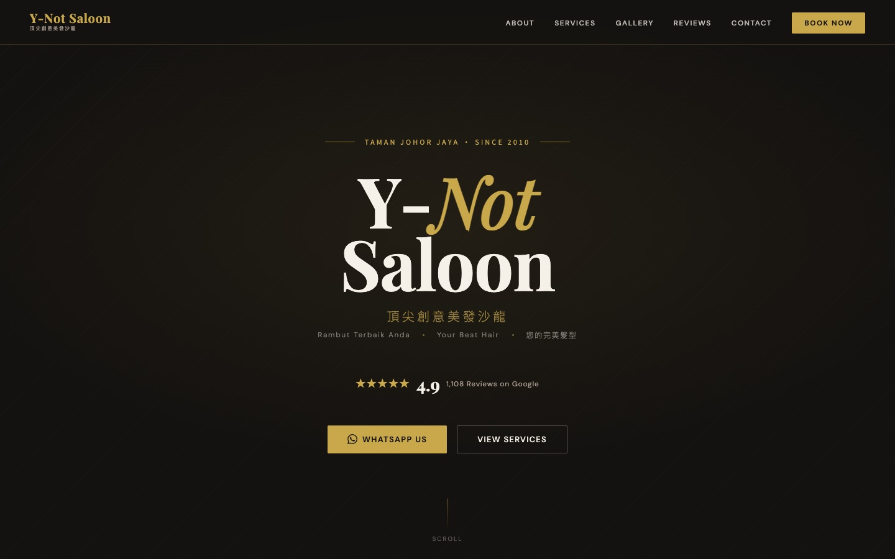

StudyOS
One place for a student's week: assignments, notes, flashcards, a to-do list, and an AI tutor.
- Assignments
- Notes
- Flashcards
- AI tutor
- Community
Next.js, Supabase, Tailwind
Student developer making web apps, Mac tools, and small graphics experiments. Mostly for myself, sometimes for others.
One place for a student's week: assignments, notes, flashcards, a to-do list, and an AI tutor.
Next.js, Supabase, Tailwind
A macOS desktop background that moves with whatever music is playing, built on system audio capture.
Swift, macOS

A place to publish letters, essays, and poems, shared by link or @handle.

Website for a hair salon, in English, Malay, and Chinese.
An MCP server that lets Claude read my Classroom assignments and create Docs, Slides, and Drive files. Handles its own OAuth.
Python, FastAPI
A water surface simulated on the GPU with the 2D wave equation. It is the panel at the top of this page.
Three.js, GLSL
An experimental gallery page for collecting my web projects in one place.
HTML, CSS, JavaScript
I'm Sabu. I build software in my spare time, usually because I wanted a tool that didn't exist yet. Right now I'm working on StudyOS and Undertone.